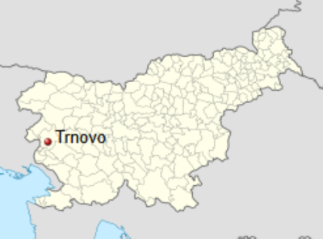

Trnovo pri Gorici je slikovita kraška vasica na Trnovsko-Banjški planoti, bogata z naravno in kulturno dediščino.
Skozno je znamenita naravna kamnita premostitev na robu Trnovskega gozda
Spomenik NOB na Kobilniku ohranja spomin na padle borce in pomembne dogodke narodnoosvobodilnega boja na tem območju.
Furenga prikazuje starodavni prevoz mlaja iz Trnovega v Novo Gorico s konjsko vprego.
Trnovo je kraško naselje v Mestni občini Nova Gorica. Nahaja se na regionalni cesti Nova Gorica – Lokve. Znano je po velikem spomeniku iz obdobja NOB. Spomenik, ki je delo arhitekta Eda Ravnikarja, se nahaja ob vznožju hriba Kobilnik, na vrhu katerega je tudi grobnica padlih. Na ploščah so vklesana imena več kot 3000 žrtev fašističnega nasilja iz občine Nova Gorica. Vas je bila med 2. svetovno vojno prizorišče hudih bojev med italijanskim in kasneje nemškim okupatorjem ter partizani IX. korpusa. Ljudje v vasi se večinoma vozijo na delo v Novo Gorico, nekaj je pravih kmetov.
Imate vprašanje? Z veseljem vas poslušamo. Izpolnite spodnji obrazec in vam bomo odgovorili čim hitreje.